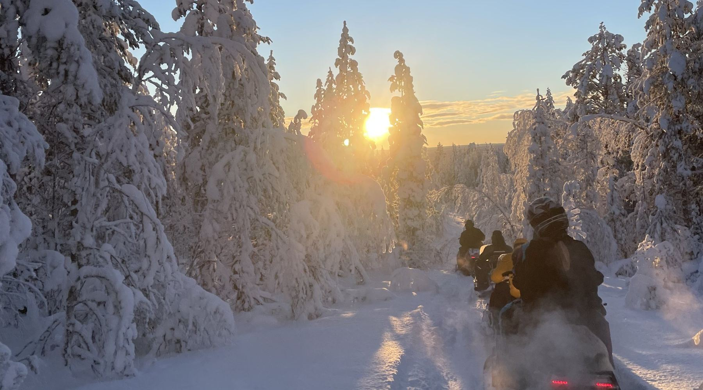
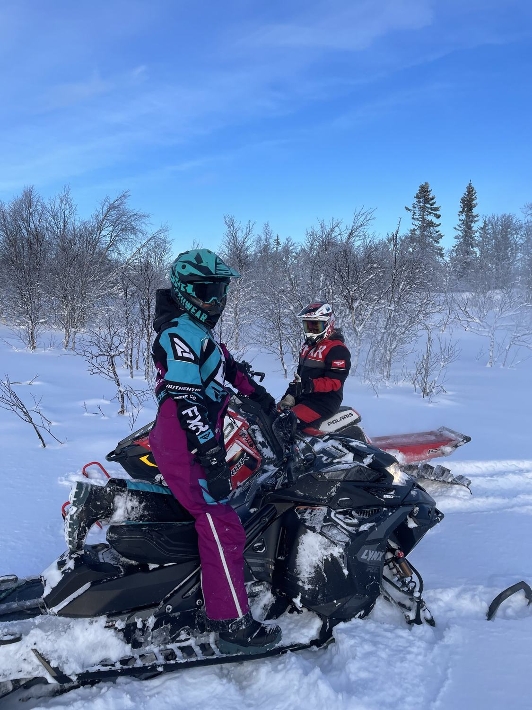
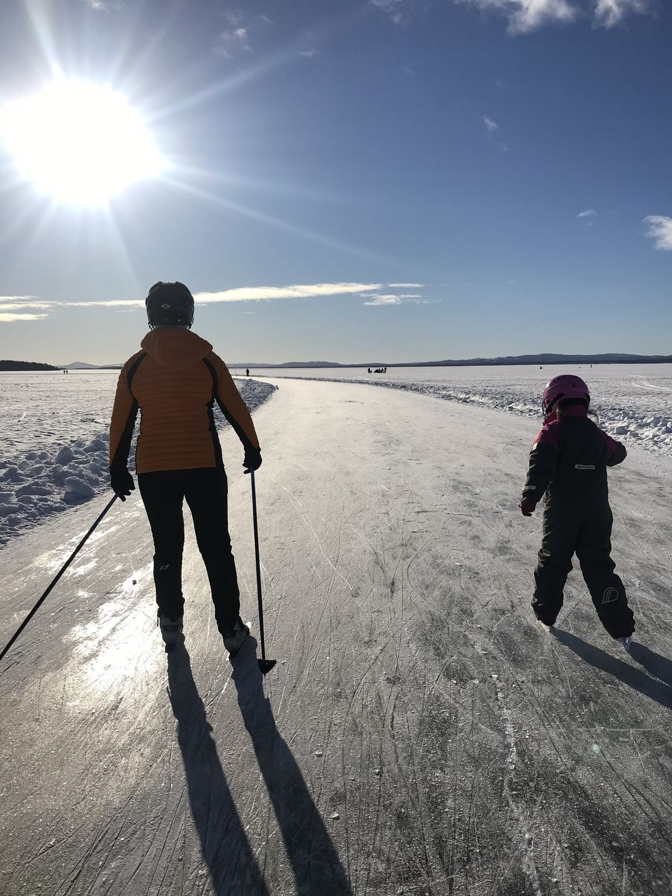
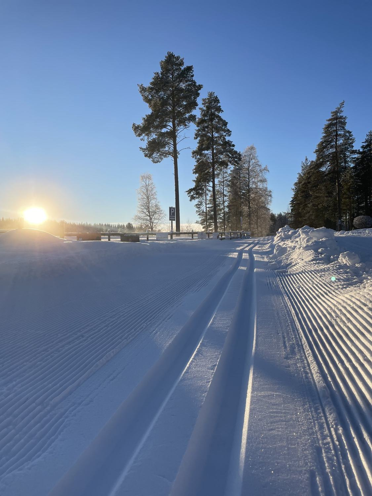
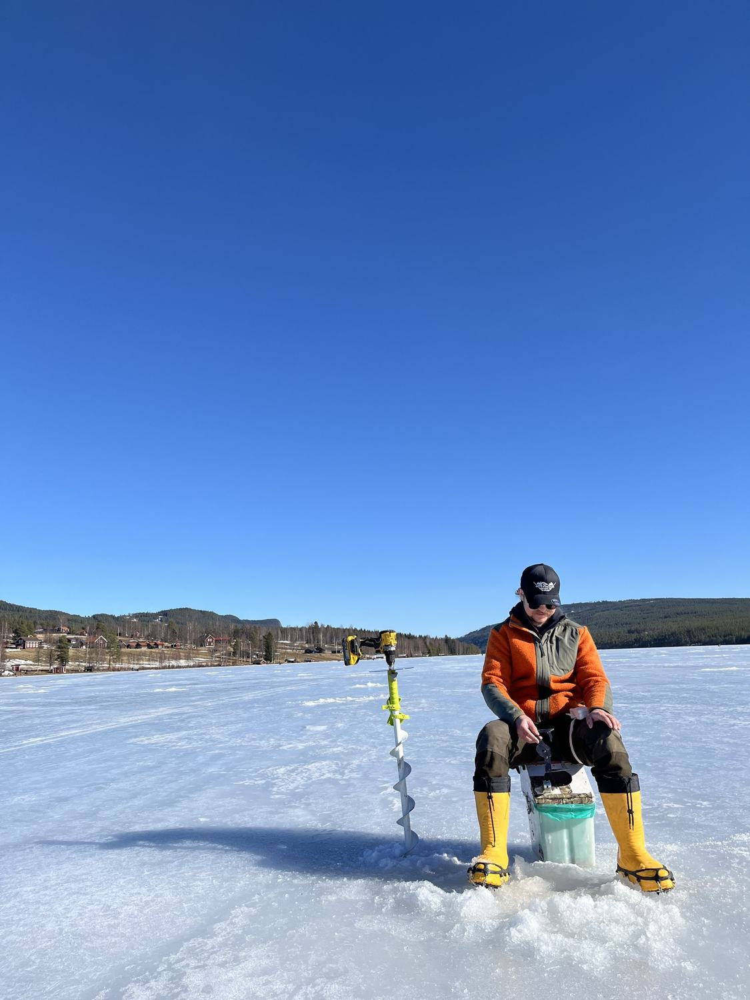
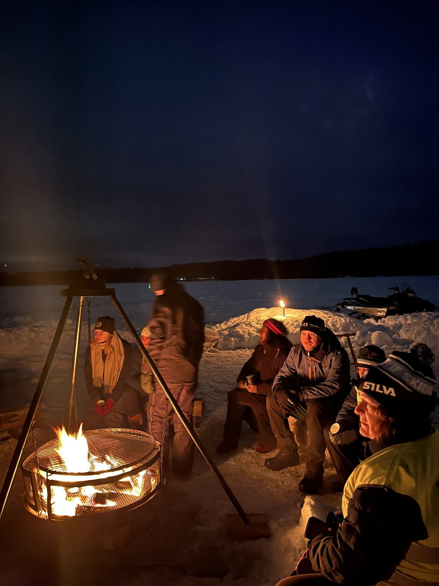
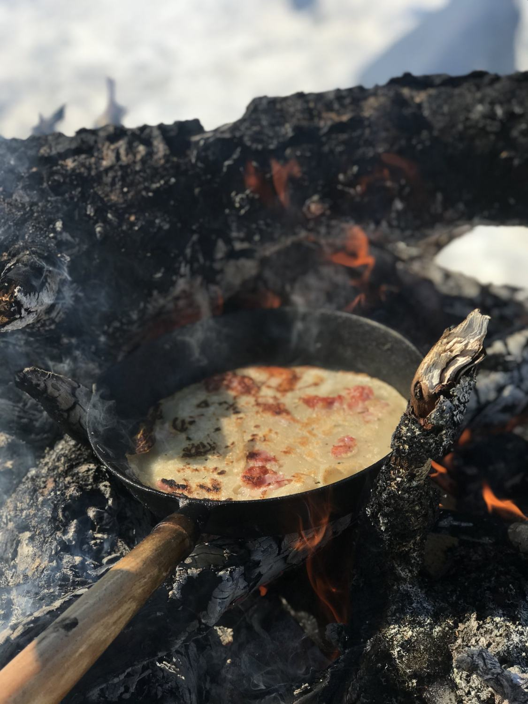

Hem/Se och göra
Se och göra
Upplev Älvdalen
Skoter, skridskor, skidspår, eldplatser och äventyr — året runt.
Mer än skog och fjäll
Älvdalen är berg, skoter- och fyrhjulingsturer
Älvdalen är inte bara skog, natur, fjäll och lugn. Vi är ute så mycket vi kan — på isen, på vattnet, i skogen och runt elden.

Äventyr
Skoter och fyrhjuling
Älvdalen är det perfekta stället för skoteråkning! Åk skoter eller fyrhjuling, eller vandra upp för våra många berg och se den vackra solnedgången.
Fler aktiviteter
På isen
Långfärdsskridskor på Nässjön
Ta en tur på vår vackra sjö Nässjön med långfärdsskridskor på vår plogade bana. Otroligt vackert!

Vinter
Längdskidor och slalom
Älvdalen är det perfekta stället för vandring, längdskidåkning och slalom på vintern.
Längdskidåkning hos Visit Dalarna
Året runt
Fiske, bad och vatten
Vi har fantastiska fiskevatten, flertalet fina badplatser, sjöar och vattendrag. Här kan du glida runt på en SUP-bräda eller i en kanot hela dagen en varm sommardag!
Fiske hos Visit Dalarna
Ute i naturen
Eldplatser och slogbodar
Vi Älvdarlingar vill tillbringa så mycket av vår lediga tid som möjligt ute i vår vackra natur. Därför kan du hitta flertalet eldplatser och slogbodar runtomkring i hela vår stora kommun.

Matlagning
Frukost, lunch och middag över öppen eld
Älvdalen är frukost, lunch, middag ute i naturen över öppen eld.
Och så mycket mer
Naturen som lekplats
Älvdalen är den perfekta platsen för dig som älskar natur och äventyr och som ständigt är i rörelse.
Jakt
Våra stora och vidsträckta skogar är perfekta för dig som älskar jakt, natur och äventyrslivet.
SUP och kanot
Glid runt på en SUP-bräda eller i en kanot hela dagen en varm sommardag.
Fyrhjuling
Åk fyrhjuling eller vandra — och gå upp för våra många berg.
Berg och solnedgång
Gå upp för våra många berg och se den vackra solnedgången.
Badplatser
Flertalet fina badplatser, sjöar och vattendrag.
Vandring
Vandra i skog och på fjäll — året runt.
Vad händer i Älvdalen?
Musik, kultur och andra evenemang för både besökare och Älvdalsbor samlas i Visit Dalarnas kalender för Älvdalen.
Saknas något?
Vet du en bra eldplats, slogbod eller ett annat favoritställe som borde finnas med? Tipsa oss, så bygger vi ut sidan tillsammans.
Tipsa oss